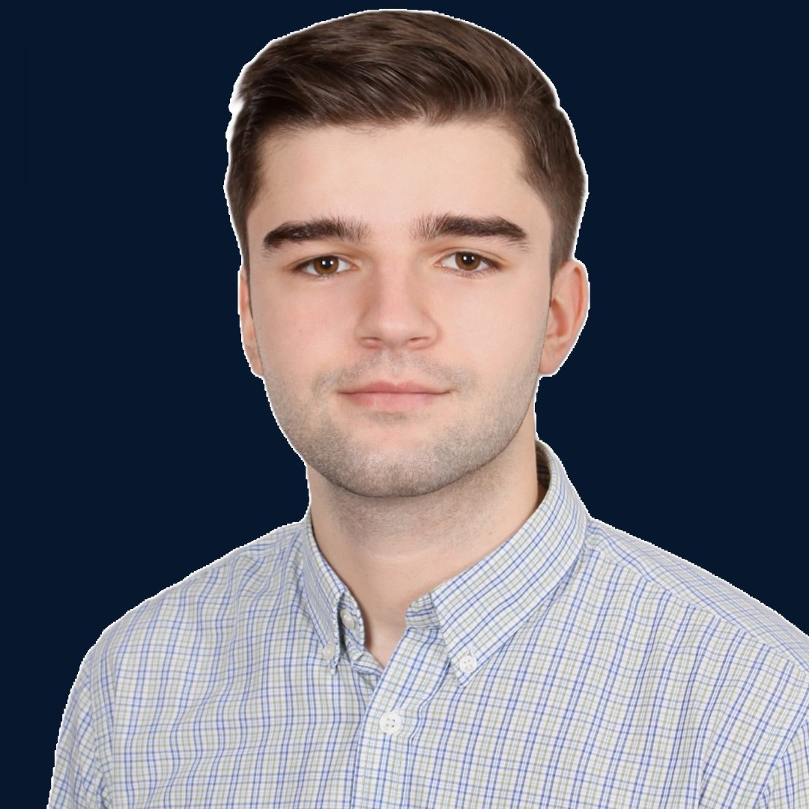

Arjan Hoxha
Diese Seite bietet einen Überblick über meinen beruflichen Werdegang, meine Qualifikationen und fachlichen Kompetenzen.
Bei Fragen nutzen Sie bitte das Kontaktformular.
Werdegang
LINDEMANN Metal Recycling ↗
Ausbildung zum Technischen Produktdesigner (IHK Düsseldorf) · Abschluss: Juni 2021
Aufgaben & Schwerpunkte
- Erstellung von Einzelteil-, Baugruppen-, Explosions- und Ersatzteilzeichnungen
- Angebotslayouts für Shredderanlagen erstellen und konfigurieren (Einlauf, Maschine, Folgeprozesse, Auslauf)
- Punktwolken bearbeiten, konvertieren und in die Siemens-NX-Umgebung importieren.
- Pflege und Verwaltung von Konstruktionsdaten in Teamcenter Active Workspace
- Einarbeitung neuer Kolleginnen und Kollegen in Teamcenter Active Workspace
- Vertretung bei der Freigabe von Baugruppen in Teamcenter Active Workspace
- Lizenzverwaltung (Vertretung): Teamcenter-Konten anlegen, NX-Lizenzen über Siemens Xcelerator zuweisen
- Prüfung der Teamcenter-Attribute von Konstruktionsdaten und Übertragung der Daten in das ERP-System SAP
Franz-Jürgens-Berufskolleg Düsseldorf ↗
Staatlich geprüfter maschinenbautechnischer Assistent mit Fachhochschulreife (Fachabitur) ↗
Praxisanteile: CNC-Fräsen mit iTNC 530, konventionelles Drehen und Fräsen, Steuerungstechnik mit Siemens LOGO!, Pneumatik mit Festo FluidSIM sowie CAD mit Autodesk Inventor.
Betriebspraktika im Bereich Metalltechnik
Praktische Tätigkeiten: Sägen, Feilen, Bohren, Blechbearbeitung, Kanten, Nieten, De- und Montage von Geländern, Straßenleuchten und -Pollern, Gewindeschneiden, Schmieden, MAG- und WIG-Schweißen, Wasserstrahl- und Sandstrahlarbeiten sowie das Auftragen von Korrosionsschutzbeschichtungen.
Mittlerer Schulabschluss
Kompetenzen
Software
Fertigung und Steuerung
Zerspanung
Blech- und Montagearbeiten
Umform- und Fügeverfahren
Oberflächenbearbeitung
Steuerung und Pneumatik
Sprachen
Ehrenamt
Sanitäter (RH)
Einsatzbereiche
- Erste Hilfe und Patientenbetreuung bei Veranstaltungen bis zum Eintreffen des Rettungswagens.
- Kontrolle der Sanitätsausstattung
- Für den Katastrophenschutz eingeteilt
- Teilnahme an Gruppenabenden und internen Schulungen
Persönliche Informationen
Persönliche Angaben
Persönliche Einstellungen
PSA-Angaben
Für den Fall, dass Schutzausrüstung beschafft werden muss:
Hobbys
Kontakt

Hallo, hier ein Bild von mir!- Ihre Kontaktdaten
- Ihre Nachricht